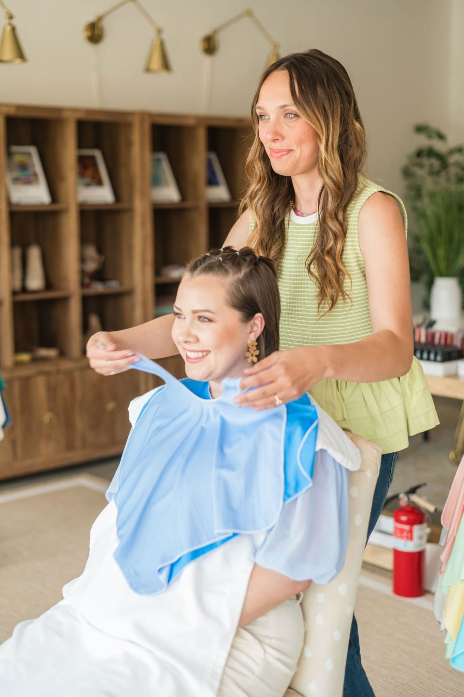

Find the colors
that feel like you.
Share a headshot and see the palette that goes with your skin undertone and hair color, so shopping for clothes gets simpler.
Three simple steps
The app checks your photos first, so you know whether the result can be trusted.
Add a headshot
Taken in diffused daylight in front of a white or light-colored wall, with no filters, no makeup, and no hat or sunglasses. A second headshot is optional, for a more reliable result.
We check the photos
Light is checked first, then the background. If something could change the result, you see a clear note about which photo to retake.
See your season
You get one of 12 seasons and a full palette you can swipe through, color by color.
Photo requirements
- 1Lighting: diffused daylight, no shadows (i.e. indoors with indirect light, overcast day, etc.)
- 2Background is a white or light-colored wall
- 3Center your face in the photo, shoulders up.
- 4No filters
- 5No makeup
- 6No hat or sunglasses
Natural light helps us find your most complementary colors.

A palette you can keep using
Here is a preview of what a result looks like. Switch between the four main seasons to see each palette. The full app uses all 12 seasons.
Less Complementary Colors
Colors outside your palette, shown without judgment.
Palettes are from a published style guide (the concept wardrobe, True Winter, Spring, Summer and Autumn guides). Colors were sampled from the guide's images, so they are close on-screen matches, not official values. The 12-season system is a convention, not a tested classification.
We tell you when a photo may skew the result
A background that isn't white, or poor light, can change how colors read. You always see what to fix, and any warning stays next to your result.
Results may not reflect true season. For most accurate diagnosis, resubmit photo with white background.
Submit a new photo with diffused daylight lighting.
Your photos, your choice
- Your photo is analyzed in your browser, on your own device.
- Nothing is uploaded, saved or sent anywhere.
- Closing or resetting the page clears your photo from the page.
- No account is needed.
Questions
What is a "season"?
Color analysis groups palettes into seasons. This app uses the 12-season system, which gives more specific palettes than four seasons.
Do I need two photos?
No. One headshot is enough. An optional second headshot, taken in a different spot or at a different time of day, lets the app double-check your result. If the two disagree, the result uses your first headshot and tells you.
Can I get a result if my background isn't white?
Yes. You will see a warning first and can choose to see your results anyway. The warning stays next to the result.
Will it tell me what to wear?
No. It shows your palette. You decide what to wear and whether the season feels right to you.